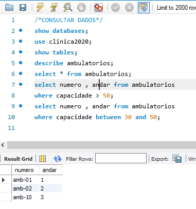
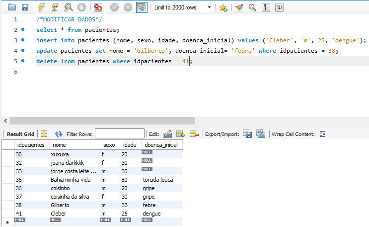
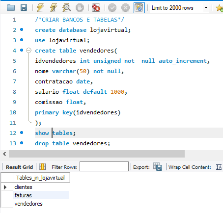
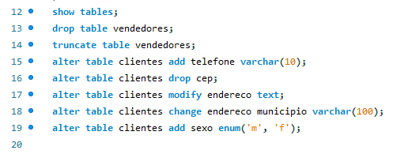
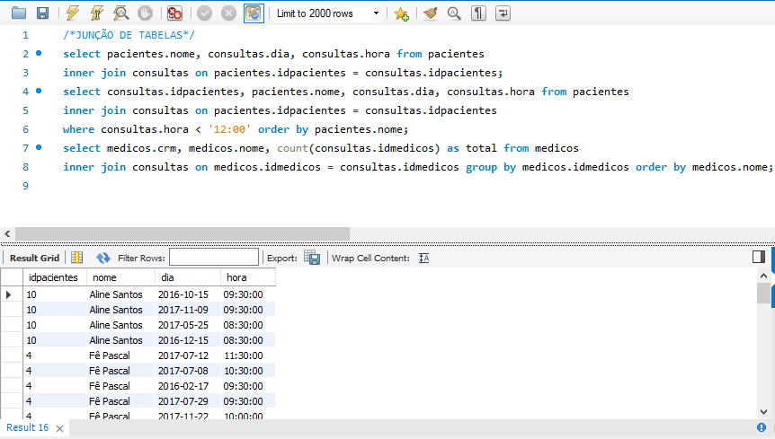

Através do estudo do livro "Aprendendo Banco de Dados com MySQL" , foi feito o aprendizado teórico e prático em cima do database "clinica2020".
Tratando os Dados

Pode ser visto os meios de fazer uma consulta dos dados armazenados na tabela Ambulatório. Tais consultas, por código de comando, facilita a visualização dos dados que precisar ser modificado ou mantido.

Os seguintes comandos altera os valores, inserindo, atualizando e excluindo. Inserir um dado novo em uma determinada tabela, para um objetivo. Atualizar dados antigos para dados recentes ou corrigindo dados incorretos. Excluir dados que nao agrega mais valor.

Uma linha de código é suficiente para criar o database, entretanto, a criação da tabela, dentro do database, ira organizar os dados para um objetivo bem definido como por exemplo, o que vai ser chave primaria e chave estrangeira e mais os seus atributos. A funcionalidade dos atributos são importante para dizer que tipo de dado vai ser colocado com o tamanho adequado.

A tabela também pode ser excluída, removida ou pode alterar seus atributos como: adicionar, modificar, renomear e valos pré-definito enum.

A comandos que junta os dados de varias tabelas para uma única tabela temporária para viasualizar com mais clareza os dados procurados.